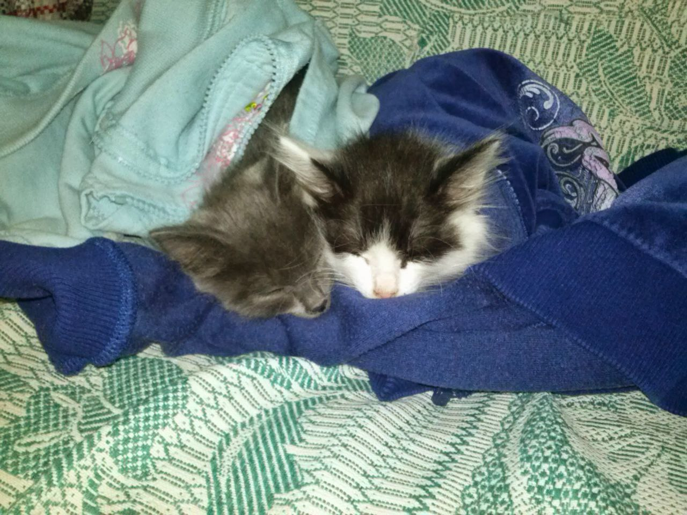

Это моя не первая HTML страница
О себе
Я родился в Екатеринбурге, учился в Школе #32
Играю на гитаре и немного на фортепиано
Какие фильмы мне нравятся:
- Трансформеры
- Мстители
- Интерстеллар
- Довод
Какая музыка мне нравится:
- Linkin park – Faint
- Linkin park – Papercut
- Linkin park – One step closer
- Linkin park – Numb
- Linkin park – The emptiness machine
- Linkin park – Breaking the habit
- Linkin park – Good things go
- Linkin park – Leave out all the rest
- Linkin park – Castle of glass
- Linkin park – Waiting for the end
- Linkin park – Burn it down
- Linkin park – Crawling
- Linkin park – From the inside
- Linkin park – Shadow of the day
- Linkin park – One more light
- Linkin park – Up from the bottom
- Linkin park – Let you fade
- Linkin park – In between
- Linkin park – Figure.09
- Linkin park – In pieces
Как связаться со мной
Telegram
